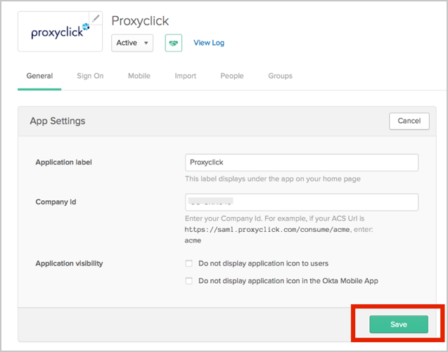

Send an email to Proxyclick Support (support@proxyclick.com) and request that they enable SAML 2.0 for your account.
Attach the following:
IDP Issuer/Entity ID: Copy and paste the following:
Sign into the Okta Admin Dashboard to generate this variable.
Login URL/SignOn URL: Copy and paste the following:
Sign into the Okta Admin Dashboard to generate this variable.
x.509 Certificate in PEM text format: Copy and paste the following:
Sign into the Okta Admin Dashboard to generate this variable.
After Proxyclick completes setting up the connection, users can login with SAML from Okta.
In Okta, select the General tab for the Proxyclick app, then click Edit.

Enter the Account ID provided by Proxyclick into the Company ID field.
Click Save.
Done!
Notes:
IdP-initiated flows are supported.
SP-initiated flows and Just In Time (JIT) provisioning are not supported.